4 Datenvisualisierung in Stata
Wir starten wie immer mit dem Einlesen eines Datensatzes:
cd "..."
use "Allbus_2018.dta", clear
replace inc = . if inc < 0
replace educ = . if educ < 0
replace age = . if age < 0Für Grafiken gilt noch mehr als für alle anderen Aspekte in Stata: ausprobieren und sehen, was passiert! Nachdem in der Regel ja zumindest eine ungefähre Vorstellung existiert, wie die zu erstellende Grafik aussehen soll, sind Grafik-Gallerien ein guter Startpunkt das eigene Trial & Error. Die größte Herausforderung ist häufig, eine Vorstellung zu entwickeln, wie die Darstellung aussehen soll. Daher im Folgenden einige Beispiele für verschiedene Anwendungsfälle. Diese lassen sich ganz grob entlang zweier Fragen einteilen:
- Soll eine oder mehrere Variablen dargestellt werden?
- Was ist das Skalenniveau der darzustellenden Variable(n)?
Grundsätzlich bestehen Grafik-Befehle aus zwei Teilen: dem Befehl graph und der Angabe eines Grafik-Typs.
4.1 Visualisierung einer Variable
4.1.1 metrische Variablen
Die Verteilung metrischer Variablen (wie z.B. die Einkommensangaben in inc) können als Boxplot, Histogramm oder kdensity dargestellt werden. Während Histogramme und K-Density-Plots die Häufigkeit von Ausprägungen innerhalb von Wertebereichen zeigen, fassen Boxplots die Lagemaße zu einer Darstellung zusammen - mehr dazu hier hier.
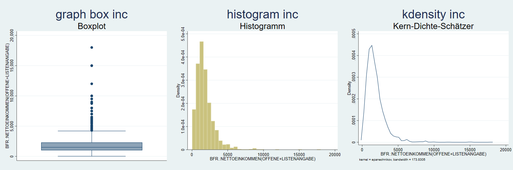
4.1.2 Kategoriale Variablen
Die Darstellung einer kategorialen Variable ist häufig eine grafische Übersetzung einer Häufigkeitsauszählung. Insbesondere bieten sich dafür Säulen- und Balkendiagramme an. Beispielsweise könnten wir die Schulabschlüsse der Befragen auszählen. Dazu zählen1 wir die respids pro Ausprägung von educ2, mit graph bar bzw graph bar, horizontal bekommen wir dann ein Säulen- bw. Balkendiagramm.
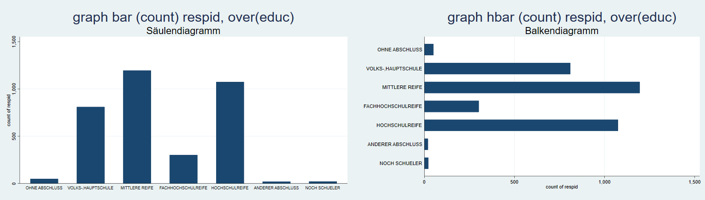
4.2 Verteilungen vergleichen mit Facetten
In der Regel wollen wir aber Verteilungen vergleichen, wie wir das auch schon in Kapitel 3 mit Hilfe von Tabellen und Kennzahlen getan haben. Hier hilft die Option by weiter. Wir hängen an die Befehle von oben einfach ,by (sex) an, um getrennte Darstellungen für Männer und Frauen zu bekommen:
graph box inc, by(sex)
histogram inc, by(sex)
twoway (kdensity inc), by(sex) // zur Bedeutung von twoway gleich mehr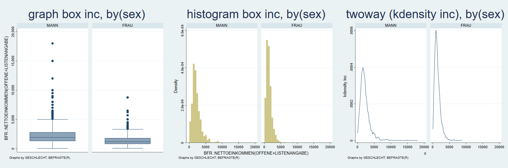 Das funktioniert auch für die Säulen- und Balkendiagramme:
graph bar (count) respid, over(educ) by(sex)
graph bar (count) respid, over(educ) by(sex) horizontal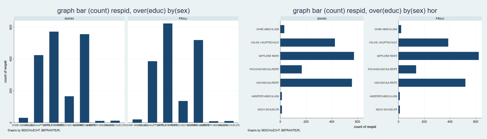
4.3 Gemeinsame Verteilung zweier Variablen
4.3.1 Mosaikplot
Für die gemeinsame Verteilung zweiter kategorialer Merkmale empfiehlt sich ein Mosaikplot. Dafür gibt es aber keinen Standardbefehl in Stata, sondern wir müssen den Befehl spineplot erst installieren:
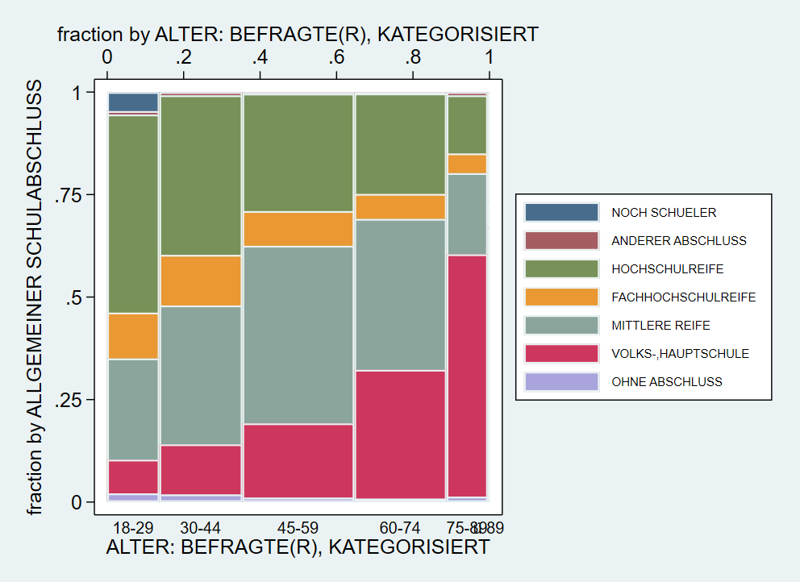
Ein Mosaikplot stellt die bedingen Häufigkeiten dar: die Breite der Säulen wird durch die Größe der Altersgruppen bestimmt. Die Anzahl der Befragten aus den jeweiligen Kategorien von educ bestimmen dann jeweils die Farbanteile innerhalb der Säulen.
4.3.2 Streudiagramm
Eine sehr weit verbreitete Darstellung für zwei metrische Variablen ist das sog. Streudiagramm (“scatter plot”), dieses bekommen wir mit twoway scatter. Bspw. können wir die gemeinsame Verteilung des Alters und des Einkommens der Befragten so darstellen:
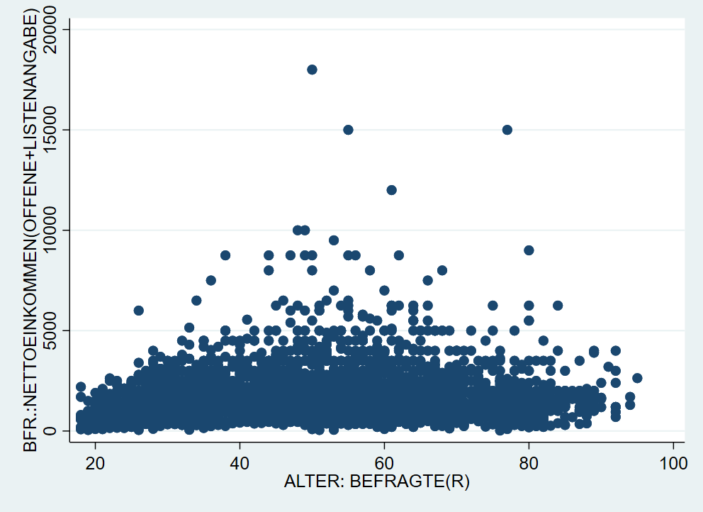
4.4 Weitere twoway Grafiken
Eben kam bereits der Befehl twoway vor. twoway stellt eine ganze Reihe an Darstellungen zur Auswahl, die wir hier nicht besprochen haben. Eine Übersicht zu allen verfügbaren Visualierungen inklusive Beispielbefehlen findet sich beispielsweise hier oder hier.
4.5 Kombinieren von zwei twoway-Grafiken
Eine besonders hilfreiche Funktion ist das Übereinanderlegen mehrer twoway Grafiken. Dazu hängen wir die Befehle mit (scatter ...) (scatter ...) einfach aneinander. Mit dieser Strategie können wir zwei nach Geschlechtern getrennte Streudiagramme aufeinander legen und so die Punkte farblich unterscheidbar machen:
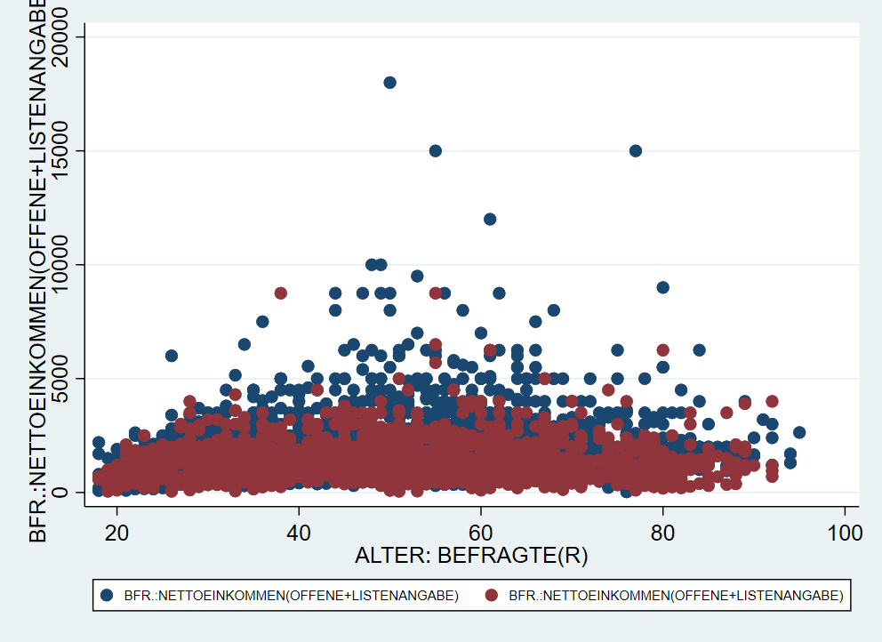
Hier haben wir also jetzt blaue Punkte für sex == 1 und rote Punkte für sex == 2. Leider sagt uns die Legende aber überhaupt nichts dazu. Dazu kommen wir gleich.
4.6 Gruppierte Boxplots
Auf ähnliche Weise können wir auch Boxplots nebeneinander legen. Auch hier geben wir nach dem Grafikkommando graph box die Subgruppen für die jeweiligen Variablen an. Allerdings funktioniert das hier leider nicht direkt mit if. Wir müssen stattdessen einen Zwischenschritt gehen und separate Variablen für jede Untergruppe erstellen.3
gen inc1 = inc if educ == 1
gen inc2 = inc if educ == 2
gen inc3 = inc if educ == 3
gen inc4 = inc if educ == 4
gen inc5 = inc if educ == 5
graph box inc1 inc2 inc3 inc4 inc5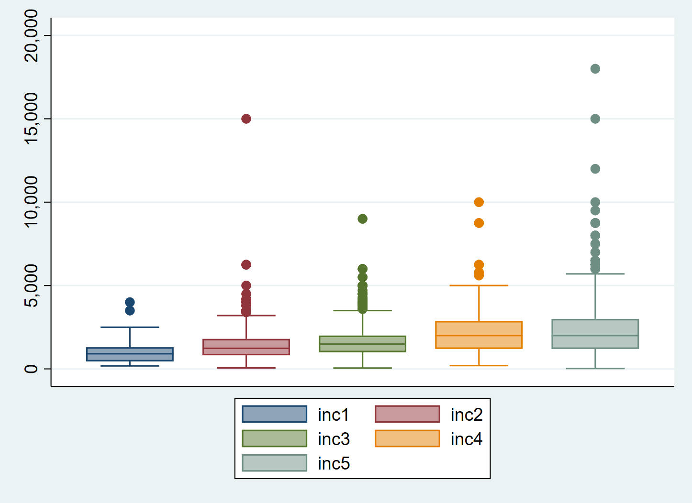
Das hat den Vorteil, dass wir dann gruppierte Boxplots nach Geschlecht erstellen können, wenn wir zusätzlich ,by(sex) anhängen:

4.7 Übungen 4
4.7.1 Übung 4-1
- Laden Sie den kumulierten Allbusdatensatz (
Allbus_1980-2018.dta) in Stata und wählen Sie die Befragten aus dem Jahr 2014 aus! Erstellen Sie einen Boxplot, ein Histogramm und einen k-Density-Plot für den BMI der Befragten (hs18).- Vergessen Sie nicht, die Missings mit
mvdecodezu überschreiben oder mitkeep/dropauszuschließen. - Überprüfen Sie z.B. mit
summary, ob alle negativen Werte ausgeschlossen wurden. - Erstellen Sie eine weitere Variante dieser Grafiken, welche die Verteilung des BMIs jeweils nach Geschlecht zeigen.
- Vergessen Sie nicht, die Missings mit
- Erstellen Sie ebenfalls für die Befragten aus dem Jahr 2014 eine Grafik, welche die Häufigkeit der Befragten aus den alten und neuen Bundesländern (
eastwest) wiedergibt!- Erstellen Sie sowohl ein Säulen- als auch ein Balkendiagramm!
- Erstellen Sie eine weitere Darstellung, welche zusätzlich nach dem Geschlecht unterscheidet!
4.7.2 Übung 4-2
Laden Sie den kumulierten Allbusdatensatz (
Allbus_1980-2018.dta) erneut und wählen Sie die Befragten aus dem Jahr 2016 aus! Erstellen Sie einen Mosaikplot, welcher die Bildung der Befragten (educ) sowie deren Kontakte zu Ausländern bei der Arbeit (mc02) abbildet.- Vergessen Sie nicht, die Missings mit
mvdecodezu überschreiben oder mitkeep/dropauszuschließen. - Überprüfen Sie z.B. mit
table, ob alle negativen Werte ausgeschlossen wurden. - Betrachten Sie die Darstellung: welche Merkmalskombination aus
educundmc02ist die häufigste? Überprüfen Sie ihre Einschätzung mit Hilfe einer Kontingenztabelle (tab educ mc02)
- Vergessen Sie nicht, die Missings mit
Erstellen Sie einen Scatterplot für das Alter
ageundxt11, die Bearbeitungsdauer des Politikquiz. Erstellen Sie den Scatterplot so, dass die Befragte aus Ost und West durch unterschiedliche Farben markert sind - so wie es hier gemacht wurde!Laden Sie den Allbus 2018 (
Allbus_2018.dta) und erstellen Sie einen Boxplot zur Bearbeitungsdauer des Politikquiz!- Erstellen Sie einen gruppierte Darstellung, je nachdem ob die Befragten aus den alten und neuen Bundesländern (
eastwest) kommen! - Splitten Sie diese Darstellung zusätzlich nach dem Geschlecht der Befragten auf!
- Erstellen Sie einen gruppierte Darstellung, je nachdem ob die Befragten aus den alten und neuen Bundesländern (
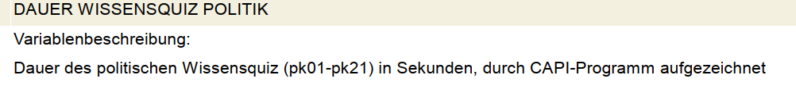
4.7.3 Weitere Übungen Kap4
Wählen Sie eine der oben erstellten Grafiken aus und
Verändern Sie die Legende des Scatterplots aus Aufgabe 4 - siehe hier
Erstellen Sie eine Alterspyramide für ein Jahr aus dem kumulierten Allbus! Laden Sie dafür den kumulierten Allbus und wählen ein Jahr aus (
tab yearzeigt Ihnen, welche Auswahl sie haben). Vollziehen Sie dann die hier gezeigten Schritte nach! Passen Sie Farben, Schrift usw. nach Ihren Vorstellungen an! Sie können anstatt der Altersgruppen auch bspw. die Bildungsgruppeneducoder Wohnortgrößegkpolverwenden!
4.8 Optionen
Diese grundlegenden Darstellungen können mit Hilfe einer ganzen Reihe an Optionen angepasst werden. Auch hier beschränken wir uns auf die wesentlichsten Optionen. Bei konkreten Fragen hilft oftmals auch eine Google-Suche nach: “stata graph text smaller” o.ä.
4.8.1 Titel
Eine klare Beschriftung ist zentraler Bestandteil jeder Datenvisualisierung. Folgende Überschriften stehen uns dazu zur Verfügung:
graph ...., title("Titel") subtitle("Untertitel") xtitle("x-Achsentitel") ytitle("y-Achsentitel") caption("Bildunterschrift")
Weitere Optionen unter help title_options.
4.8.2 Achsenbeschriftung
Außerdem können wir die Achsenbeschriftungen verändern - hier ein Beispiel für die x-Achse4
xscale(range(0 100))\(\rightarrow\) x-Achse auf 0-100 ausdehnenxtick(0 (10) 100 )\(\rightarrow\) an allen Zehner-Grenzen zwischen 0 und 100,0(10)100ist die Abkürzung für0,10,20,30,40,50,60,70,80,90,100xlabel(0 "Null" 10 "zehn" 20 (10) 100)\(\rightarrow\) Beschriftung der “ticks”

Mehr Optionen finden sich unter help axis_label_options. Bspw. kann man mit xlabel(..., alternate) die Achsenlabels nach oben und unten verschieben.
4.8.3 Text einfügen
Wir können mit text() auch ein Text auf der Grafik positionieren - wie geben erst die y-Koordinate, dann die x-Koordinate an und dann den gewünschten Text:

4.8.4 Schriftart & Textgröße
Eine Reihe an Schriftarten stehen für Textangaben zur Verfügung:
graph twoway scatter inc age, ///
title("{stSerif:Einkommen {bf:fett} {it:kursiv}}") ///
subtitle("Text{superscript:hochgestellt}{subscript:tiefgestellt}") ///
xtitle("Alter {it:age}") ytitle("{stMono:Einkommen}") ///
xlabel(0 " {stMono:Null}" 10 "{bf:zehn}" 20 (10) 100) ///
text(15000 20 "Hier ein Symbol: {&Omega}") xscale(range(0 100))
Mehr dazu unter help graph_text
Außerdem können wir mit der Option size die jeweilige Größe des Textes anpassen, dabei können wir die Größenangaben aus der Palette verwenden. Mit der Option angle(90) können wir außerdem den Text um 90 Grad (und natürlich um jeden beliebigen Wert durch entsprechende Angabe):
graph twoway scatter inc age, ///
title("Text1", size(vsmall)) ///
subtitle("Untertitel",size(large)) ///
xtitle("Alter",size(small)) ytitle("{stMono:Einkommen}",size(vhuge)) ///
xlabel(0 " {stMono:Null}" 10 "{bf:zehn}" 20 (10) 100 , labsize(tiny) angle(90))
Wenn die Option over verwendet wird, dann müssen die Textoptionen in over angegeben werden:

4.8.5 Legende
Oben hatten wir gesehen, dass die automatische Legende nicht unbedingt aussagekräftig ist. Mit der Option legend können wir die Legende beschriften und einen Titel vergeben:
graph twoway (scatter inc age if sex==1) (scatter inc age if sex==2), ///
legend(lab(1 "Männer") lab(2 "Frauen") title("Geschlecht"))
Mit der Option pos können wir außerdem die Position der Legende anpassen - wir geben dabei eine Zahl zwischen 0 und 12 an. Die Werte 1-12 entsprechen die Stunden auf einer Uhr, 0 setzt die Legende in die Mitte der Grafik.
graph twoway (scatter inc age if sex==1) (scatter inc age if sex==2), ///
legend(lab(1 "Männer") lab(2 "Frauen") title("Geschlecht") pos(9))
Weitere Optionen und Beispiele unter help legend_options. Mit legend(off) kann die Legende auch ausgeblendet werden.
4.8.6 Marker
Im Stata-Jargon werden die Punkte “marker” genannt. Deren Aussehen können wir mit entsprechenden Optionen ebenfalls verändern. Zum einen können wir mit msymbol die Form des Markers verändern, mit msize können wir die Größe und mit mcolor die Farbe anpassen:
 Dabei können wir aus einer Reihe an Formen, Größen und Farben wählen:
Dabei können wir aus einer Reihe an Formen, Größen und Farben wählen:


In unserem Beispiel vorhin hatten wir die Farben der marker aber genutzt, um die Angaben für Männer und Frauen zu unterscheiden. Hier geben wir dann mcolor etc. jeweils innerhalb der Klammern an:
graph twoway ///
(scatter inc age if sex==1, mcolor(orange) msize(small)) ///
(scatter inc age if sex==2, mcolor(sand) msymbol(D) msize(small)), ///
legend(lab(1 "Männer") lab(2 "Frauen")) 
Mit mlcolor und mlwidth können wir jedem marker die Farbe und Dicke der Umrandung angeben. Zur Auswahl stehen: vthin,thin,medthin,medium,medthick,thick,vthick,vvthick,vvvthick
graph twoway ///
(scatter inc age if sex==1, mcolor(orange) msize(small) mlcolor(gs3) mlwidth(vthin)) ///
(scatter inc age if sex==2, mcolor(sand) msymbol(D) msize(small) mlcolor(gs3) mlwidth(vvthin)), ///
legend(lab(1 "Männer") lab(2 "Frauen")) 
4.8.7 Farben
Obwohl es um Darstellungen geht, haben wir noch sehr wenig über Farben gesprochen. Neben den oben gezeigten vordefinierten Farben können wir auch Farben als RGB-Codes5 angeben und so Farben eigenen Paletten verwenden:
graph twoway ///
(scatter inc age if sex==1, mcolor("91 37 97") msize(small)) ///
(scatter inc age if sex==2, mcolor("150 196 134") msymbol(D) msize(small)), ///
legend(lab(1 "Männer") lab(2 "Frauen"))
Farbpaletten sind ein Thema für sich und was gut aussieht ist natürlich subjektiv…. Allerdings gibt es einige Leitlinien, siehe hier. Es gibt zahlreiche Möglichkeiten selbst zu erstellen: zB. mit Adobe Color oder Paletton. Außerdem gibt es unzählige Quellen für Farbpaletten: Instagram oder ColorBrewer.
Manchmal ist es ratsam, eine den Markern/Säulen/… eine gewisse Transparenzu geben. Durch anhängen von %30 können wir bspw. die Deckkraft auf 30% heruntersetzen (je höher die Zahl, desto höher die Deckkfraft):
graph twoway ///
(scatter inc age if sex==1, mcolor("91 37 97 %30") msize(small)) ///
(scatter inc age if sex==2, mcolor("150 196 134 %30") msymbol(D) msize(small)), ///
legend(lab(1 "Männer") lab(2 "Frauen"))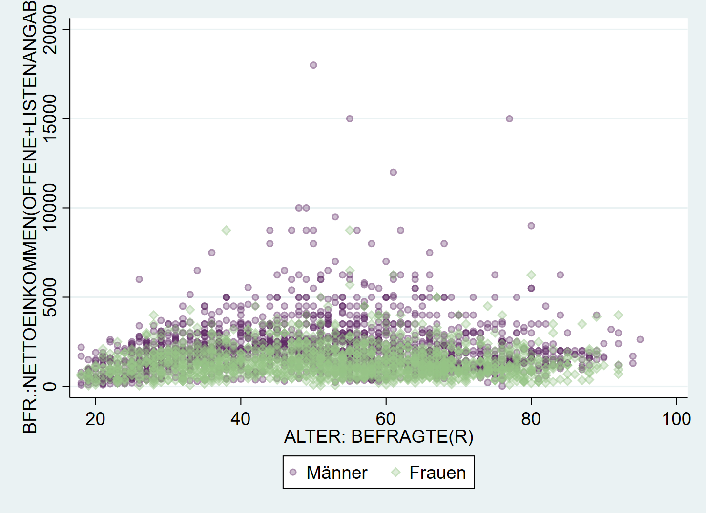
Leider gibt es diese Funktion erst ab Stata 15 aufwärts.
Außerdem können wir mit plotregion(fcolor( )) und graphregion(fcolor( )) die Hintergrundfarben der Grafik und des Koordinatenbereichs anpassen. Mit region(fcolor( )) können wir die den Hintergrund der Legende verändern:
graph twoway ///
(scatter inc age if sex==1, mcolor("91 37 97") msize(small)) ///
(scatter inc age if sex==2, mcolor("150 196 134") msymbol(D)), ///
legend(lab(1 "Männer") lab(2 "Frauen") region(fcolor(red))) ///
plotregion(fcolor(eltblue)) graphregion(fcolor(olive_teal))
4.8.7.1 Boxplots anpassen
Die Farben in Boxplots können wir mit box anpassen - bei mehreren Boxen geben wir zuerst eine Zahl an, auf welche Box sich die Optionen beziehen sollen. Die Ausreißer können wir mit marker berarbeiten:
graph box inc1 inc2 , ///
box(1, color("orange") blcolor(black)) marker(1, mcolor("purple") msymbol("Dh") ) ///
box(2, color("159 97 184") blcolor(navy)) marker(2, mcolor("gs45") msymbol("Sh") ) 
4.8.7.2 Balken/Säulendigramme anpassen
Für Balkendiagramme ist bar() die richtige Option. Mit fcolor können wir die Flächenfarbe anpassen, mit color die Umrandung.

Leider ist die unterschiedliche Einfärbung von Balken etwas komplizierter, hierzu müssen wir erst mit collapse den Datensatz umformen. Siehe hier.
4.8.8 Vorlagen
Eine Alternative ist auf Grafik-Schemata zuzückzugreifen. Beispielsweise wird mit , scheme(sj) die Grafik nach den Vorlage des Stata Journals erstellt:

Mit graph query, schemes wird eine Liste der verfügbaren Schemata angezeigt.
Weitere Optionen bieten zB die blindschemes von Daniel Bischof. Diese müssen zunächst mit ssc install blindschemes installiert werden und stehen dann zur Verfügung, zB
Hier noch ein Beispiel mit plotplain aus blindschemes:

4.9 Anhang & Beispiele zum selbst anpassen
Im Folgenden finden sich nun einige Beispiele mit (sehr) vielen Optionen als Vorlage für eigene Anpassungen. Trial & error wärmstens empfohlen!
4.9.1 Boxplot
Wie oben gezeigt, muss für gruppierte Boxplots (hier nach Geschlecht) muss die dargestellte Variable zunächst aufgesplittet werden:
cd ""
use "Allbus_2018.dta", clear
replace inc = . if inc < 0
replace age = . if age < 0
egen age_c = cut(age), at(20,35,50,65) // Alter in Gruppen
lab def agec1 20 "20-34" 35 "35-49" 50 "50-64" // Gruppen labeln
lab val age_c agec1
// Einkommen in Männer und Frauen splitten:
gen inc_m = inc if sex == 1
gen inc_f = inc if sex == 2
lab var inc_m "Männer"
lab var inc_f "Frauen"graph box inc inc_f, over(age_c) ///
scheme(lean1) ///
box(1, color("0 41 93")) marker(1, mcolor("0 41 93") msymbol("o") ) medline(lcolor("204 175 105")) /// optionen box1
box(2, color("146 143 107")) marker(2, mcolor("146 143 107") msymbol("o") ) /// box2 anpassen
legend(cols(2) pos(12) region(fcolor("249 247 241") lcolor("16 74 138"))) /// Legende
ytitle("{stSerif:Einkommen}{superscript:2018}") b1title("Alter") /// Achsenbeschriftung
title("Einkommen") caption("{bf:Quelle}: Allbus 2018 {it:eigene Berechnungen}",position(5)) /// titel usw.
plotregion(fcolor("252 251 248")) graphregion(fcolor("249 247 241")) // Hintergrundfarben
4.9.2 Scatterplot
Hier ein angepasster Scatterplot, welcher aus drei überlagerten scatter besteht:
graph twoway ///
( scatter bp_before bp_after if agegrp == 1, mc("0 62 81") msymbol(o) ) /// Altersgruppe 1 -> dunkle Punkte
( scatter bp_before bp_after if agegrp == 2, mc("0 125 186") msymbol(d) ) /// Altersgruppe 2 -> blaue Rhomben
( scatter bp_before bp_after if agegrp == 3, mc("214 210 196") msymbol(s) ) /// Altersgruppe 3 -> Vierecke
, scheme(lean2) /// Schema
legend(lab(1 "30-45") lab(2 "{stMono:46-59}") lab(3 "60+") lcolor("16 74 138") region(fcolor("249 247 241") lcolor("16 74 138")) pos(6) cols(3) ) /// legende -> 3 Spalten
xtitle("{stSerif:Blutdruck nachher}") ytitle("{stMono:Blutdruck vorher}") /// Achsenbeschriftung
text(185 172 "Ein Text" "über {stSerif: 2} Zeilen") title("{&Delta}p={stSerif:R}*V") // Textfeld einfügen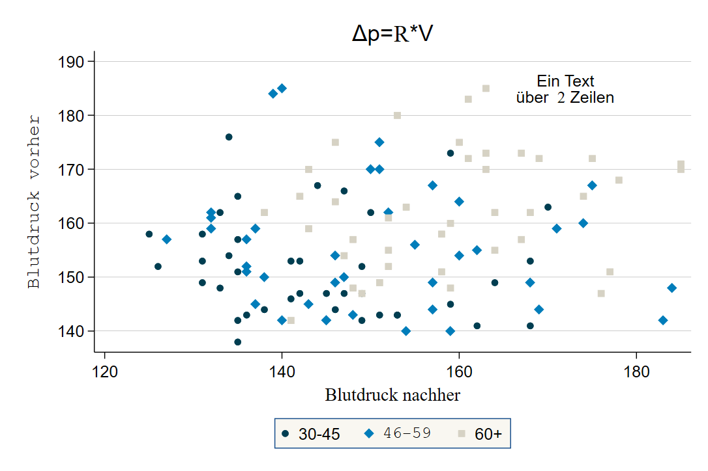
4.9.3 Bevölkerungspyramide
Häufig ist die größte Herausforderung, die Daten so umzustellen, dass sie zum gewünschten graph-Befehl passen. Ein Beispiel ist die Erstellung einer Bevölkerungspyramide aus den Allbusdaten:

Auch diese Bevölkerungspyramide lässt sich als Stata-Grafik erstellen. Allerdings müssen dazu einige Zwischenschritte durchlaufen, die fortgeschrittene Datenaufbereitung mit collapse voraussetzen. Außerdem könnte ein Teil der Aufbereitung mit separate abgekürzt werden. Mehr Informationen dazu finden sich am Ende dieses Skripts in Kapitel 11.
Die grundsätzliche Funktion für die Bevölkerungspyramide ist ein Balkendiagramm mit graph twoway bar , horizontal. Die Länge der Balken soll jeweils durch die Anzahl der Fälle in jeder Altersstufe, getrennt nach Geschlecht, bestimmt werden. Dazu müssen wir also zunächst die Anzahl der Befragten pro Alterstufe und Geschlecht bestimmen. Wenn wir den Allbus 2018 laden, haben wir ja einen Datensatz mit einer Zeile pro Person. Was wir jetzt aber benötigen ist eine Variante, in der wir den Datensatz sozusagen “zusammenschieben”: wir brauchen jeweils eine Zeile pro Altersstufe und Geschlecht und eine Variable mit der Zahl der Befragten.
age sex Anzahl_Befragte
1 18 1 15
2 18 2 11
3 19 1 22
4 19 2 15
5 20 1 18
6 20 2 16Um dorthin zu kommen, steht uns der collapse-Befehl zur Verfügung:
cd ""
use "Allbus_2018.dta", clear
tab agec
keep if sex > 0
keep if agec > 0
collapse (count) respid , by(sex age)
list in 1/8Unter respid ist jetzt die Zahl der Befragten in der jeweiligen Kombination aus age und sex abgelegt:
age sex respid
1 18 1 15
2 18 2 11
3 19 1 22
4 19 2 15
5 20 1 18
6 20 2 16
7 21 1 21
8 21 2 13Um verwirrung zu vermeiden, benennen wir respid in total um:
Allerdings möchten wir jetzt die Angaben für Frauen und Männer in getrennte Variablen ablegen.6
age sex total total_m total_f
1 18 1 15 15 .
2 18 2 11 . 11
3 19 1 22 22 .
4 19 2 15 . 15
5 20 1 18 18 .
6 20 2 16 . 16
7 21 1 21 21 .
8 21 2 13 . 13
9 22 1 18 18 .
10 22 2 15 . 15Jetzt können wir daraus ein Balkendiagramm erstellen, wobei wir zwei twoway kombinieren - wie schon beim Scatterplot:
 Was hier noch fehlt ist, die Umorientierung der Zahlen für die Männer “nach links”. Dazu multiplizieren wir
Was hier noch fehlt ist, die Umorientierung der Zahlen für die Männer “nach links”. Dazu multiplizieren wir total_m mit -1:
Damit dann verwenden wir neg_total_m für die Balken der Männer:
 Mit
Mit xlabel und legendnoch einige Anpassungen, außerdem können wir mit text noch Beschriftungen hinzufügen:
twoway( bar neg_total_m age, horizontal )(bar total_f age, horizontal) ,xlabel( -40 "40" -30 "30" -20 "20" -10 "10" 0 10(10)40 ) legend(off) text(100 -8 "Männer") text(100 8 "Frauen")
Anpassung der Farbe, des Schemas, …:
twoway ///
(bar neg_total_m age, horizontal fcolor("60 117 153")) ///
(bar total_f age, horizontal fcolor("201 255 247")) , ///
xlabel( -40 "40" -30 "30" -20 "20" -10 "10" 0 10(10)40 ) ///
legend(off) text(100 -8 "Männer") text(100 8 "Frauen") ///
xscale(range(0 50)) xtick(-50 (10) 50 ) ///
scheme(plotplain) xtitle("{stSerif: Anzahl Befragte}") ytitle("{stSerif: Alter Befragte(r)}")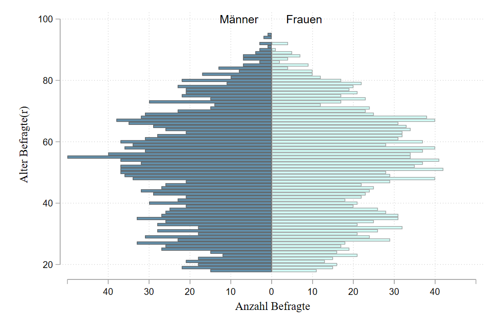
4.9.4 Boxplot
Definition der Bestandteile eines Boxplots:
- ggf. Ausreißer
- unterer Whisker:
q1 - 1.5* IQR - untere Grenze: 1. Quartil
- mittlere Linie: Median
- obere Grenze: 3. Quartil
- oberer Whisker:
q3 + 1.5* IQR - ggf. Ausreißer
Die Box enthält also die zentralen 50% des Wertebereichs. 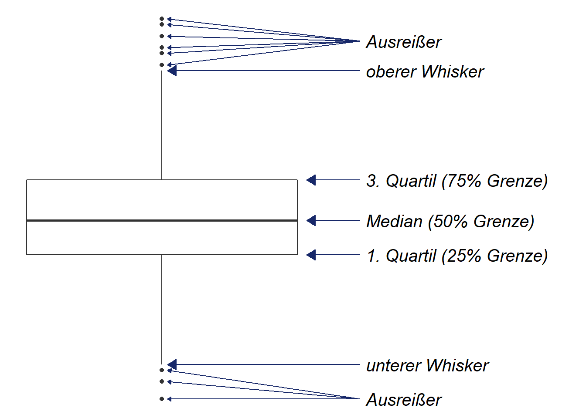
Daher die Angabe
(count).↩︎over(educ)legt dabei fest, dass innerhalb der Kategorien voneducgezählt werden soll.↩︎für die y-Achse funktionert das genauso, lediglich mit
yticksusw.↩︎RGB steht dabei als Abkürzung für die Anteile der Grundfarben Rot, Grün und Blau an der Mischfarbe. Andere, zB hex Farbcodes können (
#0D173F), diese können z.B hier umgerechnet werden.↩︎Eine Abkürzung für diesen Schritt mit Hilfe von
separatefindet sich in Kapitel 11↩︎